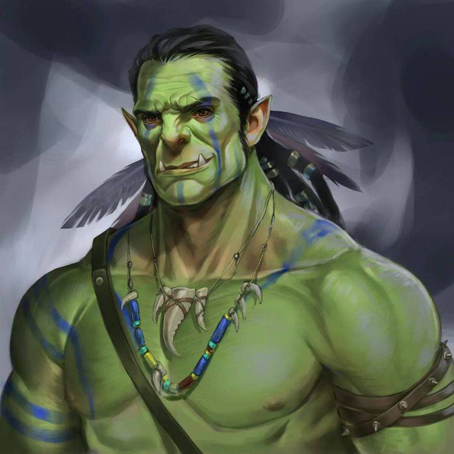

| Имя | Рифжих |
|---|---|
| Пол | м |
| Возраст | 45 |
| Раса | Орк |
| Класс | Рейндежер |
| Описание | Среднего роста среднего телосложения накаченный мужчина. Много украшений на теле: ожерелья из зубов, талисманы, камни, оберегы - всё связано с природой. Косички, ленточки в волосах. Кожа зелёная. |
| История | Родился в семье орков военных, в детстве много общался с бабушкой орком- рейндежером. И решил пойти по её стопам. Зарабатывает на жизнь тем что ищет реально плохих преступников и сдаёт их королю. Охотник за головами, но вообще няшка. | Фото |  |